1: Introduction
The data in hand is the Merchandise Trade volume of Singapore with its top 6 trade partners in 2019 and 2020.
They are identified as:
- China (Mainland)
- Hong Kong
- Malaysia
- Japan
- Taiwan
- United States of America
This period of time is especially crucial (and interesting) as it is one of the most tumultuous times the world has faced, with nearly all sectors taking a massive hit The COVID-19 Pandemic.
The data was retrieved from the Department of Statistics, Singapore (DOS).
2: Original Data Visualization
The following is the original chart that was prepared:

Figure 1: Original Chart
This visualization will be critiqued on two parameters: Clarity and Aesthetics.
2.1: Critique: Clarity
Clarity, as the word suggests, is how clear/lucid the chart is when its message to the reader, free of ambiguity and confusion.
The chart falters as such:
Title: The title of the graph says 2019 - 2020. This creates a level of ambiguity as were not sure as to if it is from Jan 2019 - Dec 2020 or Jan 2019 - Jan 2020 and so forth.
The x-axis adds to the ambiguity of the title. For example, for the Japan panel, there is only 2020 whereas for the others, there is 2019 - 2021.
Example:

Figure 2: Misleading Title
Mismatch of Axis: The x-axis is labeled as Month of Period, however, the ticks are labeled by the year.
Example:

Figure 3: Misleading x-axis
Mismatched Dual-Axis: The import and export y-axis scales are not synchronized, as a result it creates ambiguity.
Example:

Figure 4: Mismatched Dual Axis
In the case of Hong Kong:
There is the illusion that exports are only slightly higher than the import volume across any one time period, however that is not the case. In fact, the exports are much higher than the imports.
Also, Hong Kong is actually net importer of Singapore and that information is not visible on the graph.
In the case of Taiwan:
There is the illusion that exports and imports are comparable. However, Taiwan is a net exporter of Singapore and that information is not visible at the first glance.
Since the countries are all on separate and unsynchronized axis, it is hard to make comparison between them.
For example, if one were to study the chart carefully, we can see that there is a huge trade surplus with Hong Kong as compared to other countries.
There is no mention of the source of data. This makes it unclear to the user as to whether the chart comes from a reliable data source or not.
The chart fails to indicate that the values indicated on the charts are in fact in billions or the currency it is in. The raw data is actually scaled down by a thousand.
2.1: Critique: Aesthetics
Aesthetics, as the word suggests, the visual appeal of the chart.
The chart falters as such:
The alpha (opacity) ratio of the chart is too high. It creates a murky look to areas where the chart overlaps as shown below.
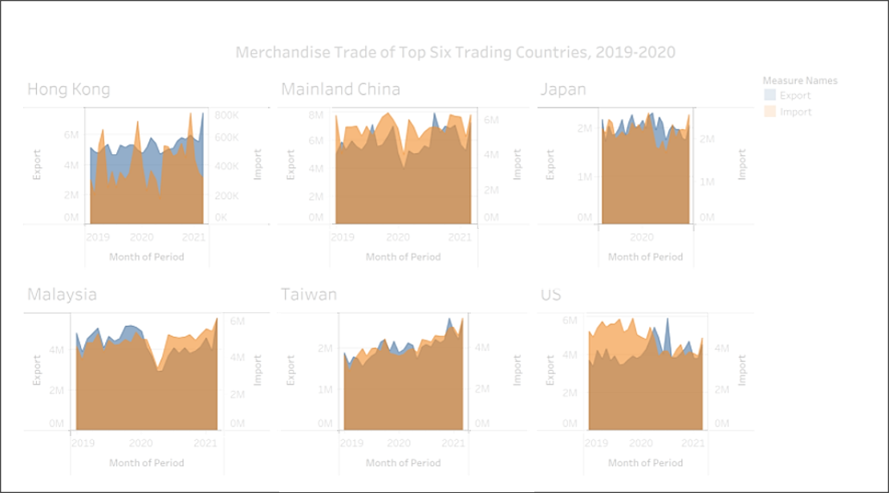Figure 5: Murky look
The compound line graph is perhaps not the correct visualization technique for this, and it is poorly executed as well.
The compound line graph is usually used so show the proportion of components that make up some aggregate variable. As such, the differences between the points across a certain time period would give actual values.
Due to the unsynchronized axis, the difference cannot be seen.
A line graph would be a better and cleaner visualization choice.
The labels for each panel of the facet grid is larger than the title. And the font type is also not standardized across the chart.

Figure 6: Unchecked font sizes
The widths of each panel is not the same.
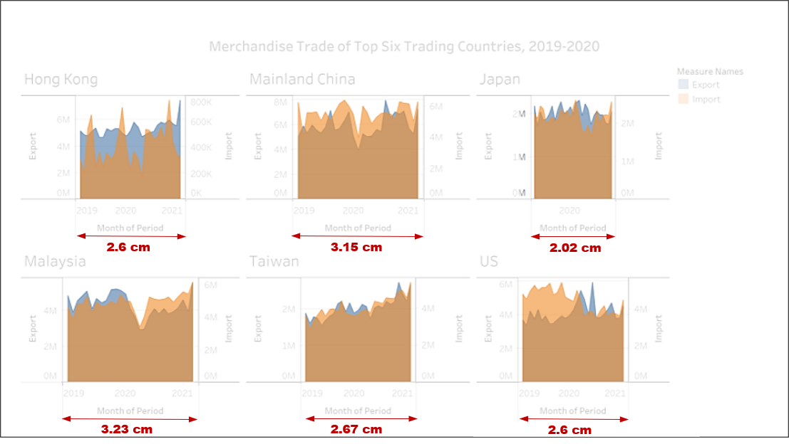Figure 7: Unequal Width of the Panel
The distance of the axis labels is also not standardized across the panels.
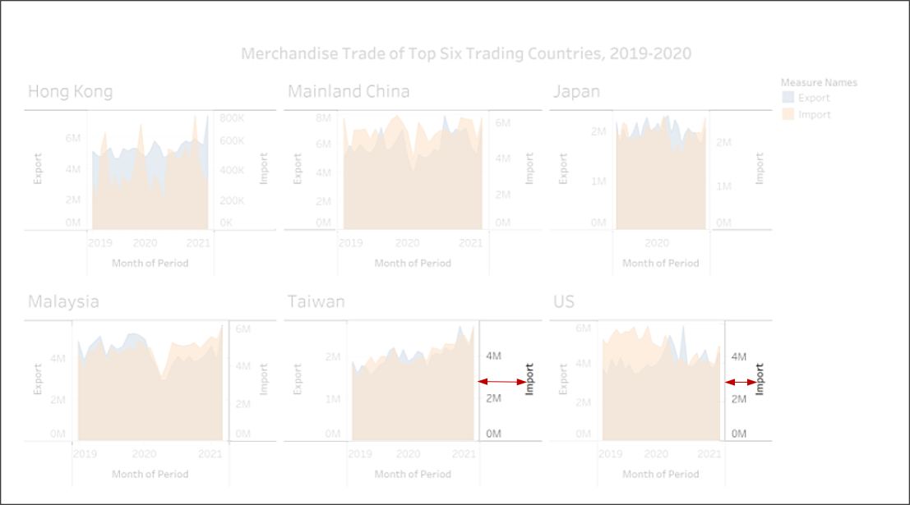Figure 8: Unequal distance of y-axis labels
3: Design Sketches
The initial sketch of the chart:
Figure 9: Initial Sketch
Issues Addressed
Clarity - Point 1 The title will be concise, implying year 2019 and 2020. In addition to that, it will state that the import and export terms are relative to Singapore.
Clarity - Point 2 X-axis will be marked according to Month, with only the major ticks labeled. This will remove ambiguity from the previous design and also not crowd the axis too much.
Clarity - Point 3 & Point 4 The dual axis will by synchronized and shared between countries so that directly comparison can be made between countries as well as within their respective imports and exports.
Clarity - Point 5 The source of the data will included at the bottom of the chart. This will not only highlight that the data is from a reliable source, but also highlight that the import and export is relative to Singapore.
Clarity - Point 6 For the Import and Export values, the raw value in billions will be reflected and the currency will also be stated as (SGD).
Aesthetics - Point 1 & Point 2 A line chart will be used so that the movements of the graph are clear. In addition to that, another chart will be created, Export - Import, to see the difference in values which perhaps the earlier visualization tried to show using a compound line chart.
Aesthetics - Point 3 The label of the title will be larger than that of the countries as well as the font type.
Aesthetics - Point 4 & Point 5 The facet will be equally split into 6 panels, one for each country and the axis will be shared. This will ensure that they are of equal size.
4. Building the Alternative Design
4.1 The Data
The raw data is in .xlsx format.
It contains 2 sheets:
- T1 : Merchandise Imports by Region/Market, Monthly
- T2 : Merchandise Exports by Region/Market, Monthly
The figure below shows a snapshot of the data:

Figure 10: Snapshot of the raw data
Things to Note:
- Data starts at Row 6
- The dates are in columns i.e.data needs to be transposed
- The 6 countries need to be filtered out
4.2 Data Preparation
First, launch the Tableau Desktop software.
Import the Data. From the local directory where the
Raw_Data.csvis saved, drag and drop into the homepage as shown: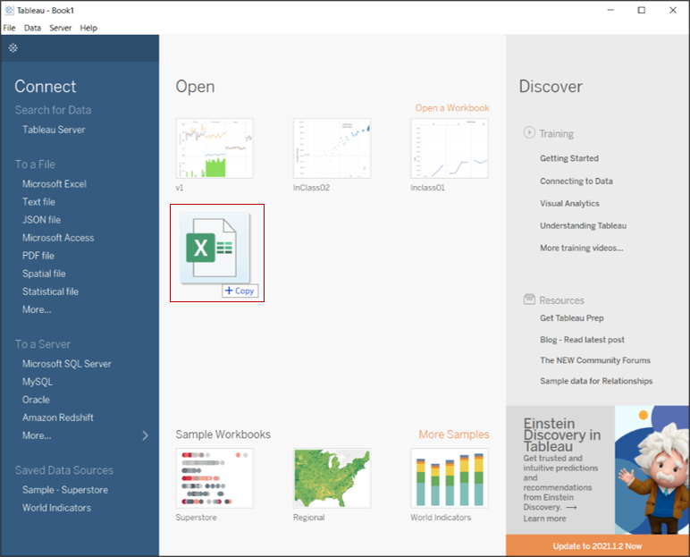Figure 11: Tableau Start Page
We will see this screen once the data is loaded.
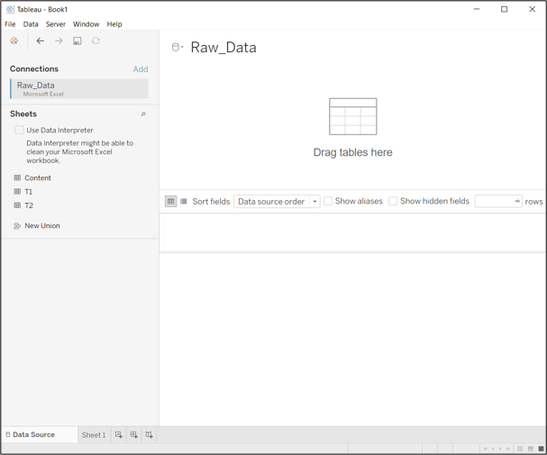Figure 12: Tableau Workspace
As discussed previously, since the data only begins at row 6 (and also has other information row 100 onwards), we will tick the
Data Interpreterbefore dragging tables into the workspace.Figure 13: Data Interpreter
Drag
T1into the workspace. The data, highlighted in purple, will appear.
Figure 14: T1 Data Preview
Country Filter
Since, we only require the 6 countries, a filter will be applied.
The sequence steps are highlighted in the following:Click on the
Add|Filterbutton (Box 1) and thenAdd..(Box 2)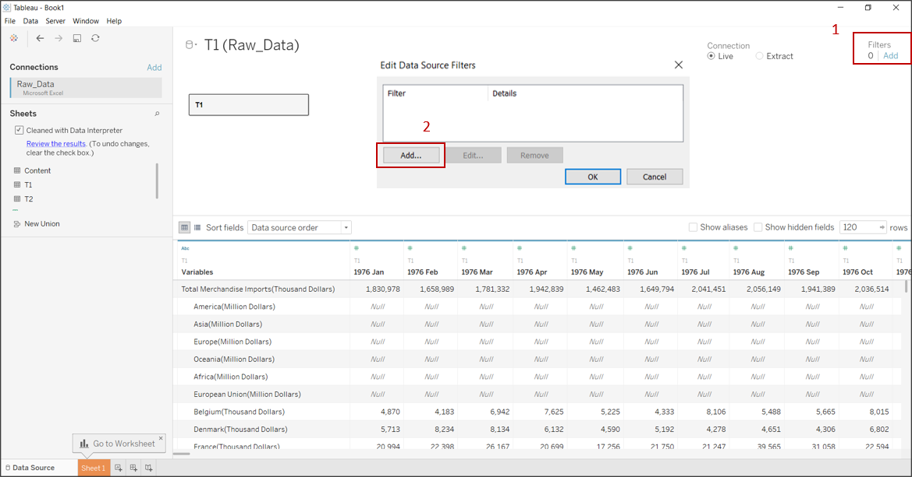Figure 15: Adding filter
Select
Variablesand ClickOk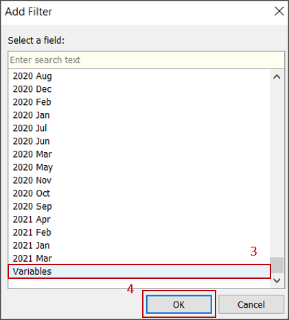Figure 16: Select Variables
Select all the 6 Countries that were listed: Mainland China, Malaysia, Hong Kong, Taiwan, United States, Japan
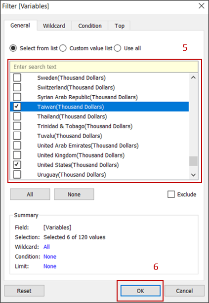Figure 17: Select Countries
We will see the filter added as shown below. Register the changes by clicking
Ok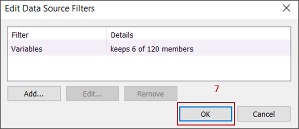Figure 18: Commit the changes
Pivot the table.
Select all the columns: Click the first column + shift + Click the last column.
Right click to get the drop down list as shown below, and selectPivot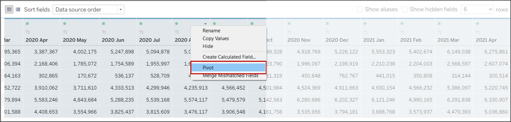Figure 19: Pivot table
Now, the data looks like:
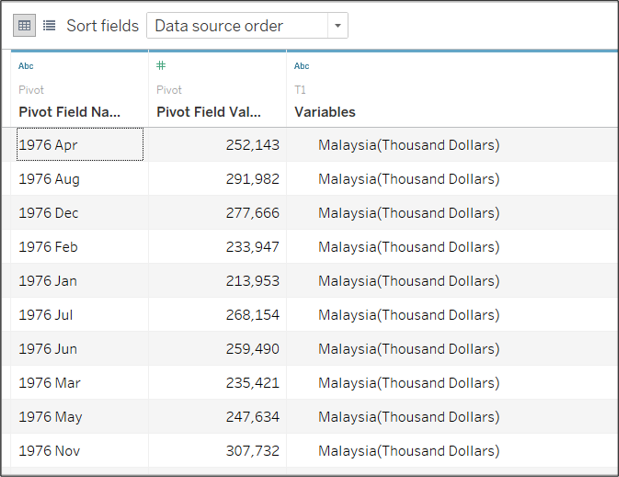Figure 20: Output of Pivotted Table
Formatting & Renaming the columns.
Formatting:
Select the
Abcicon (which indicated string format) on the top left hand corner of the date column as shown in Box
Right click and selectDate. This will change the format of the column.
Figure 21: Changing Date Format
Renaming:
Right click on the column one-by-one and select
Rename. Rename the respective columns toDate,Import ValueandCountry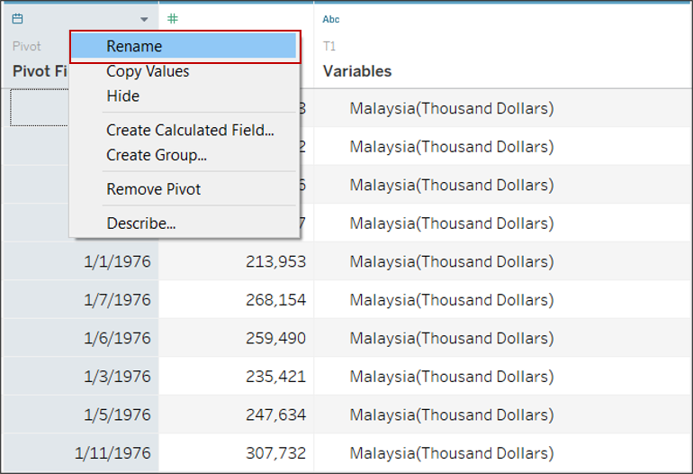Figure 22: Renaming the Columns
The data looks as shown below:
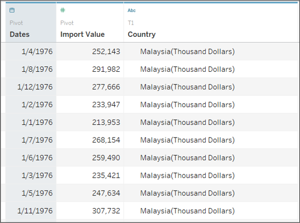Figure 23: Output after Rename & Format change
Date Filter
Since we only require years 2019 & 2020, we will add another filter.
The steps are shown below:
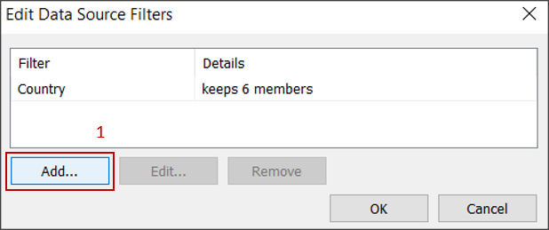Figure 24: Adding Year filter
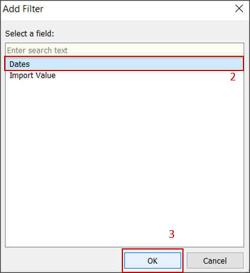Figure 25: Select Data variable
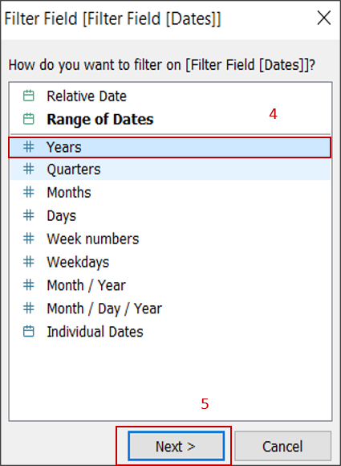Figure 26: Selecting Years
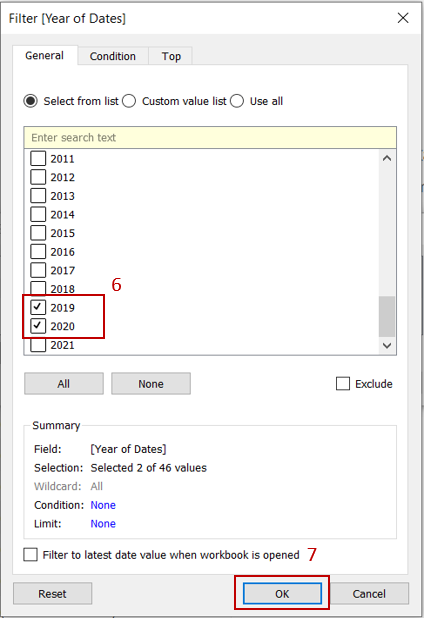Figure 27: Selecting 2019 & 2020
Save the file as
Import_Data.csvIn the top row of icons, click on
Export Data to CSVas shown below: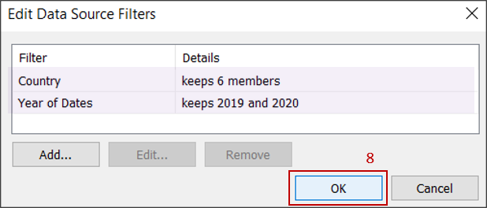Figure 28: Commit the Changes
Repeat the steps above for T2 and export the data as
Export_Data.csv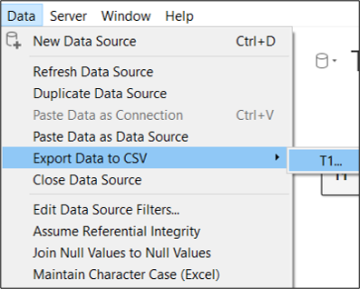Figure 29: Save the Data
Open a new session of Tableau and drag the newly created Import_Data.csv.
Export_Data.csv will also appear.Drag the Import_Data.csv node into the workspace as shown.
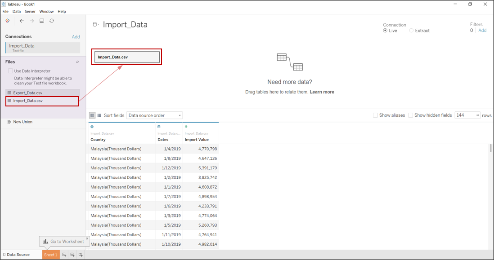Figure 30: Drag Import_Data
If the Export_Data.csv file does not appear, go to
Connectionsand clickAddas shown below: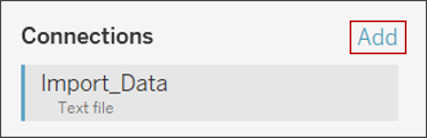Figure 31: Adding Export_Data.csv
Merge the files. Now, we will merge the two .csv files on
Date&Country.
Double click onImport_data.csvin the workspace and then dragExport_Data.csvin.
Next, click on the Venn Diagram icon addDate.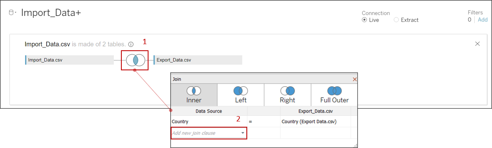Figure 32: Merging files
The data below will be updated and we will see as follows:
We can see that the the icon in theImport_Data.csvnode is updated to show that it is a merged table.
Also, the columns are updated: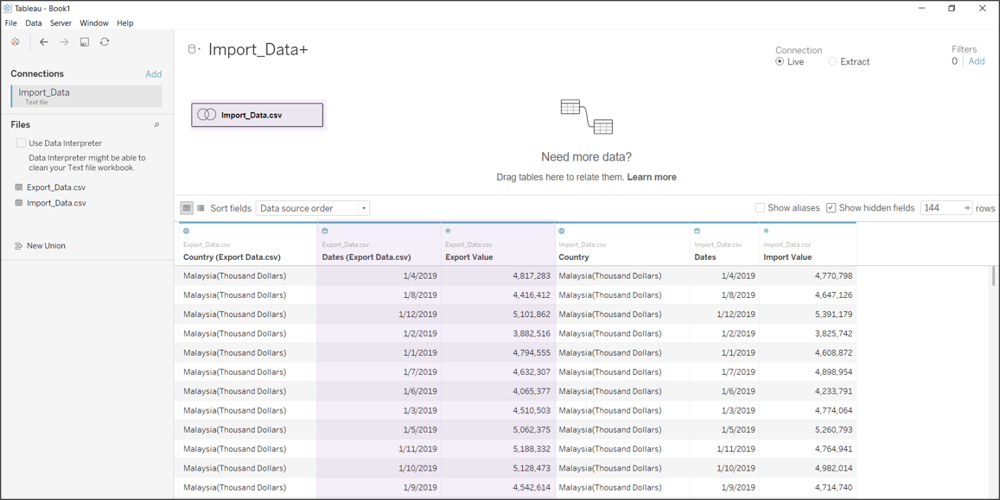Figure 33: Output of merge
We will also hide to two duplicate columns highlighted.
Right click and selectHide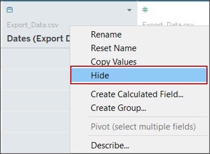Figure 34: Hide un-needed columns
Create aliases for country data
Right click on the
Country(Export_Data.csv)column and selectAliases...For each of the countries, edit the countries and click
ok.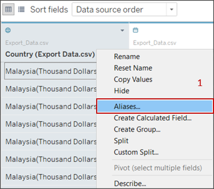Figure 35: Create aliases
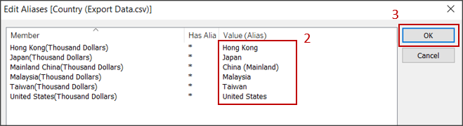Figure 36: Type in the Country names
Create calculated fields
As the
Export ValueandImport Valuesare in thousands, we will scale it up by a factor of 1000 so that the raw values are reflected on the visualization.Right click on th
Export Value (Thousands)column and select Create Calculated Field... Next, we add the formulat and label the calculation asExport Value`. The process is shown below:Figure 37: Create calculated field: Scale up by thousand
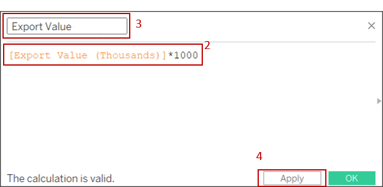Figure 38: Formula
Repeat the process for the
Import Value (Thousands)column and save it asImport ValueWe will also create another calculated field called
Export-Import: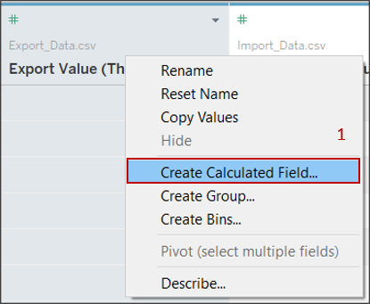Figure 39: Create calculated field: Export-Import
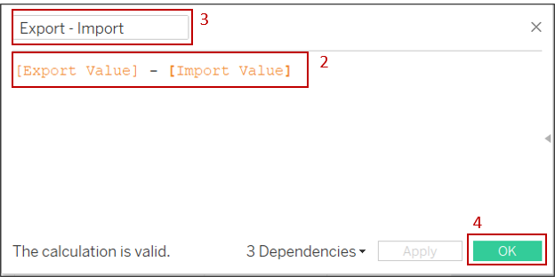Figure 40: Formula
4.3 Creating the Chart
On the bottom left hand corner of window, click on the
Sheettab. This is where the chart is built.Drag and drop the variables (known as Measures in Tableau) into the are marked by
ColumnsandRowsas shown below.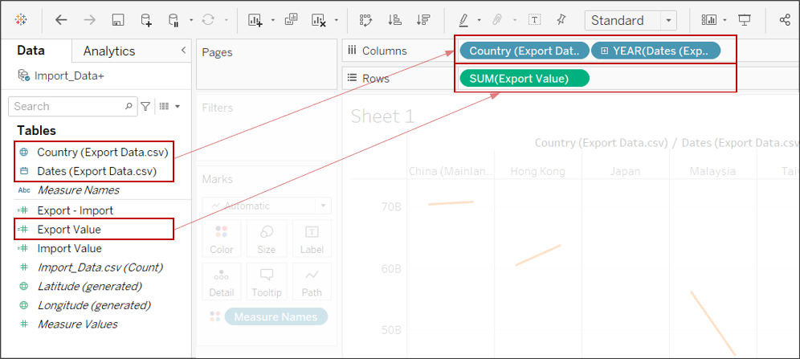Figure 41: Create chart
Change year to month parameter by clicking on the square icon and selecting
Month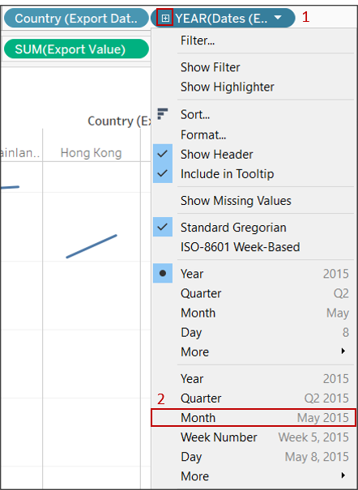Figure 42: Change year to month
Create a dual axis
Hold and drag the
Import Valueto the right edge of the chart.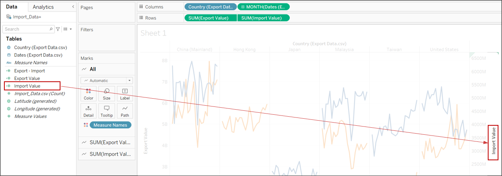Figure 43: Creating a dual axis
Once that is done, right click on the
Import Valueaxis and selectSynchronize Axis
Figure 44: Synchronize axis
Editing the X-axis
Right click on the x-axis and select
Edit Axis.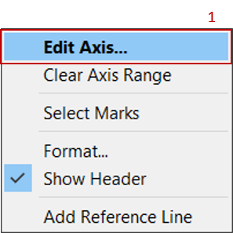Figure 45: Edit x-axis
Next we make the changes shown below:
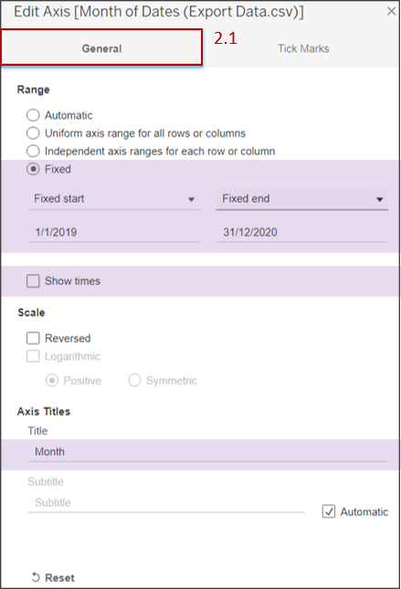Figure 46: General axis settings
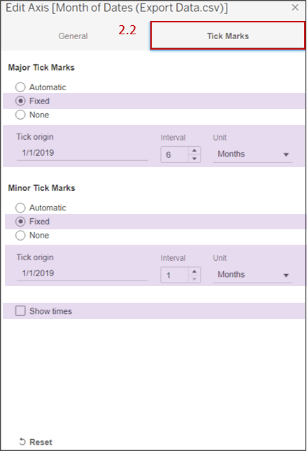Figure 47: Tick marks axis settings
Once the changes have been made, close the window.
Right click on the axis again and selectFormat...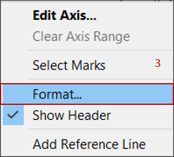Figure 48: Formating x-axis
Make the following changes:
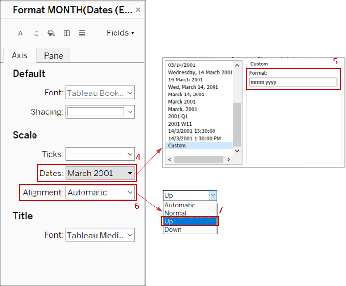Figure 49: Changes to x-axis format
Changing the Chart Features
Size of Line Chart:
Select theAlltab under the Mark card. Click theSizeicon and toggle the sliding bar.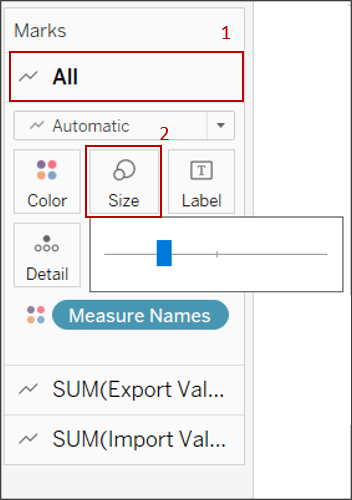Figure 50: Changing size of line chart
Type of Line Chart:
Under theAlltab selectColorand click on the line icon. This will show the data points.
Figure 51: Adding points to line chart
Hide Column Label:
We can hide the column labels as it the Country names are self explanatory Right click and selectHide Field Labels for Column
Figure 52: Hide field label
Edit Title:
Right click on the title and selectEdit Title...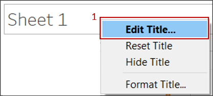Figure 53: Editing title
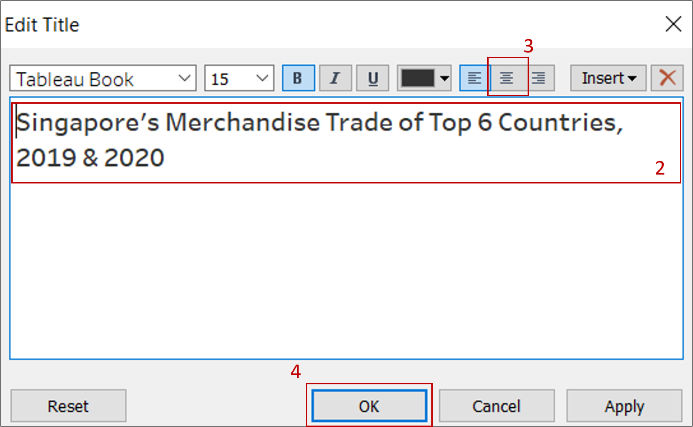Figure 54: Title to Add
Adding
Export-ImportDrag and dropExport-Importtwice on to theRowsbar.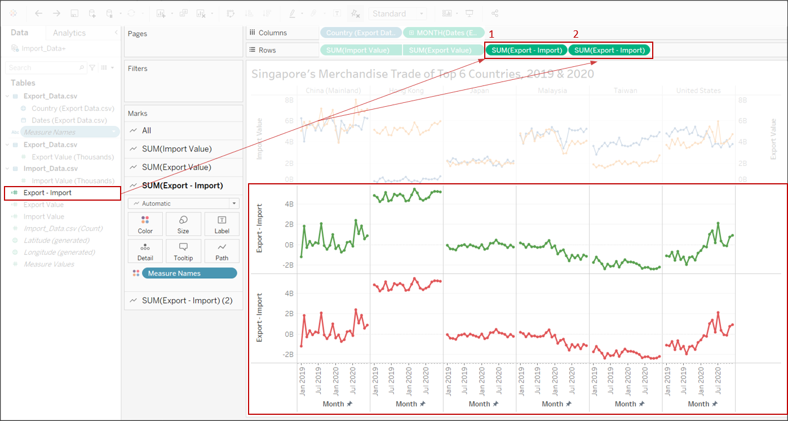Figure 55: Creating second chart
Next, we will click on the lower y-axis (red chart) and select
Dual Axis.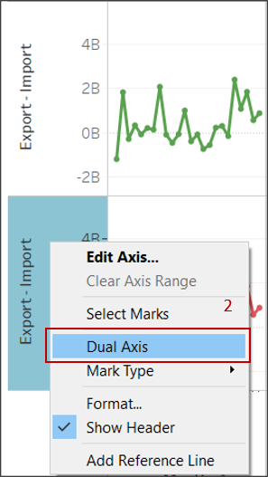Figure 56: Select Dual Axis
Synchronize the axis
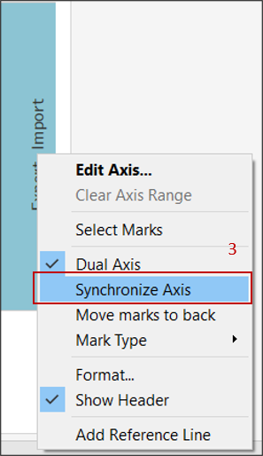Figure 57: Synchonize Axis
Now, we will change the one of the chart into a bar chart. Under the Marks card, select
SUM(Export-Import)(2)(any of them would be fine) and select from the drop down,Bar.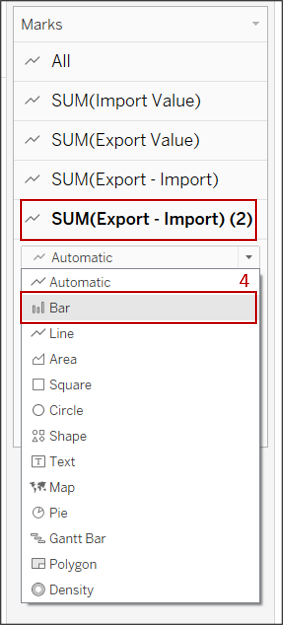Figure 58: Change to bar chart
Once that is done, drag the
Export-Importvariable into the Color box and reduce the opacity.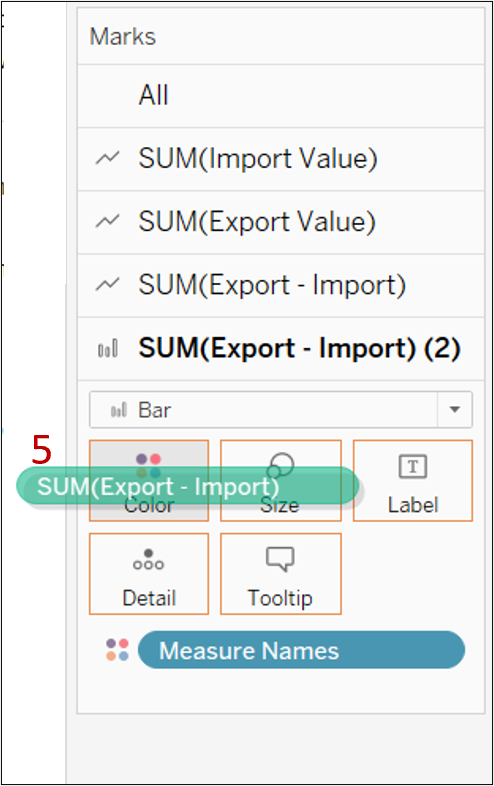Figure 59: Adding color gradient to bar chart
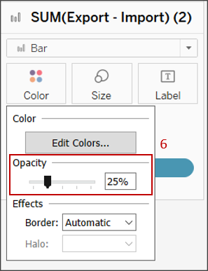Figure 60: Changing opacity
Edit the legend With the newly created bar chart, we will change the color gradient so that it shows red for negative values and green for positive.
The steps are shown below:
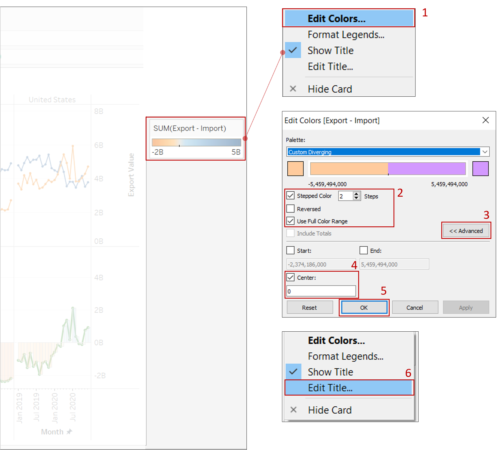Figure 61: Settings for color gradient
Once that is done, we change the color and width of the line chart of the
Export-Importchart.Changing the grid lines.
Right click anywhere on the chart and select
Format...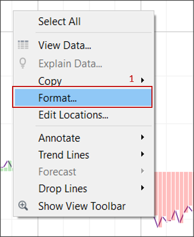Figure 62: Formatting gridlines
Make the following changes to get only vertical lines and not horizontal
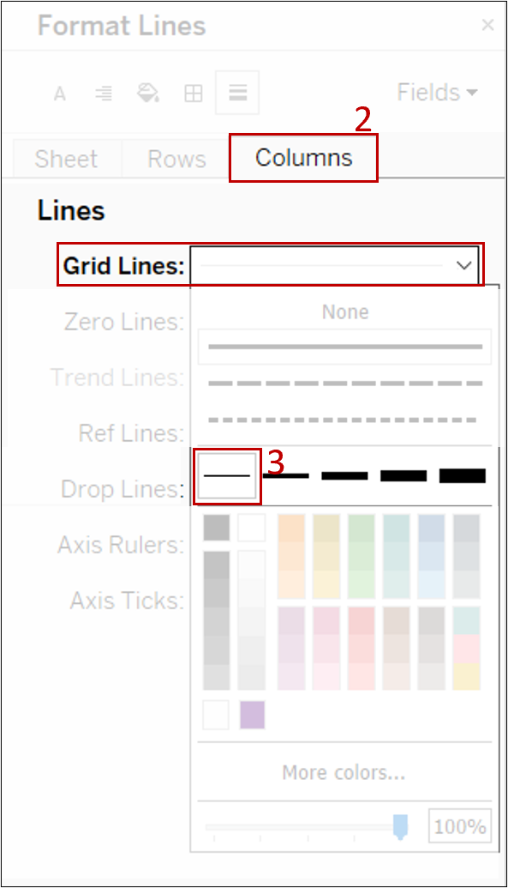Figure 63: Column settings
Figure 64: Row settings
Annotations will be made in the chart.
To do so, right click, select
AnnotateandPointto make the annotation.For further formatting to change the annotation bubble shape, right click on the text box and select
FormatLastly, caption will be added to refer to the data source.
Right click on the bar right below the x-axis and select Caption. The caption box will appear and right click on that to make edits.
Figure 65: Adding caption
5. Final Visualization
The final chart can be found here:
It is as follows:
Figure 66: Final Visualization
6. Insights
China
We can see that during the period of January & February (both 2019 and 2020) trade falls sharply. This can be likely due to Chinese New Year celebrations during which many of the businesses are closed in China and Singapore.
While the dip in Singapores imports can be observed in both 2019 and 2020, Singapores exports dipped in February 2020 and not February 2019.
This could be partly due to the lockdown in Wuhan, China brought on by the Covid-19 pandemic.. The lockdown was imposed on 23rd of January 2020.
- There is a spike later in August 2020 which can be likely due to the recovering economy in China and increased demand for non-oil domestic exports(Nodx)
Hong Kong
Hong Kong is a net importer
The trade surplus with Hong Kong increased from 2019 to 2020
In 2019, Singapores imports increase from the period of February to April however, in 2020, the peak was much lower. This would be possibly due to the Pandemic with both countries seeing an uptick
While in the previous year, exports increase from March to May, in 2020, the exports took a sharp dive. This is due to the circuit breaker in Singapore.
Japan
- While the Balance of Trade suggests a general deficit, Singapore exported more from April to September 2020. This could likely be due to the pandemic.
With Chinas lockdown in response to the pandemic disrupting supply chain, Japans economy took a hit.
Malaysia
The Balance of Trade is approximately around 200 million but after April 2020, there is an increasing trade deficit.
The large dip seen in April 2020 is due to the restriction on movement in Malaysia as a measure to curb the spread of Covid-19.
Soon after, the trade picks up as Malaysia opens its economy.
Taiwan
Taiwan is a net exporter
The trade deficit had reduced slight in December 2019, however it has deepened since.
The dip in December 2019 was likely due to the uncertainty shrouded by the US-China trade war & weakened commodity prices
United States of America
Trade with the US has mostly in a deficit
The Covid-19 pandemic turned that trend in March 2020 as US battled the pandemic.
In addition to that, USAs reliance on medical and pharmaceutical good also boosted Singapores exports.
In August 2020, Singapores exports boosted due to increase demand for non-electronic goods